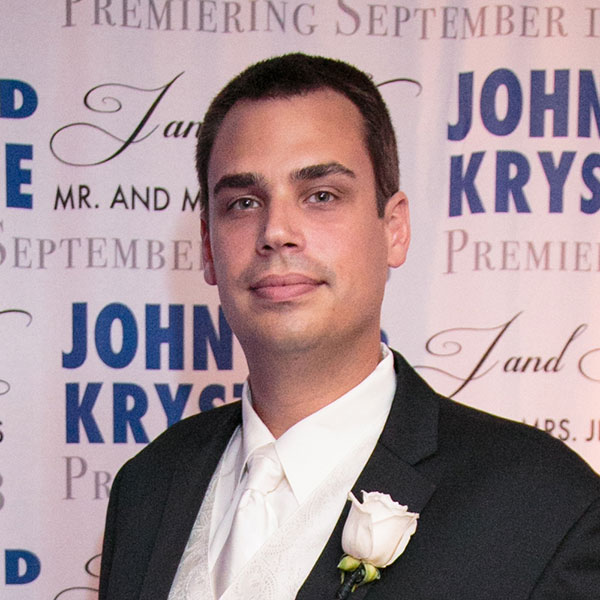

John C. Jennings

Contact
Education
University of South Florida
- Master of Arts in Education in Instructional Technology (Graduated December 2010)
- Bachelor of Arts in Mathematics Education (Graduated May 2007)
Skills & Software
Web
- PHP
- CSS / SASS
- Javascript / jQuery / AJAX
Content Management Systems (CMS)
Software
- Photoshop
- Illustrator
- Premiere Pro
- Captivate
Experience
Johnson & Johnson, Tampa, FL Jan. 2017 - Present
Software Developer (Drupal)
Checkers Drive-In Restaurants, Tampa, FL Dec. 2015 - Jan. 2017
Web Application Developer, Project Manager, Web
- Code, oversee, and maintain all consumer-facing websites for Checkers & Rally's, inherited from previous agencies that were involved in its initial construction
- Utilize Symfony, a PHP framework, to begin the transition of the existing websites from their legacy code to new websites using a modern MVC back-end framework and responsive front-end markup
- Develop on a daily basis using PHP, CSS / SASS, Javascript, SQL, AJAX, and HTML
- Use version control and deployment software, such as Git, Jenkins, and Vagrant, for a consistent development cycle
- Focus on improvements to the usability and accessibility of the websites' content, especially in the new websites
- Identify stakeholders within the company at-large, and especially the marketing department, to collaborate on content and presentation changes to the existing websites and for feature requests for the new websites
- Act as the point-of-contact for all external stakeholders, including design agencies involved in the new website design and overall company media campaign
- Manage all website change requests through a ticketing system
TUI Group, Clearwater, FL Oct. 2014 - Dec. 2015
Web Application Developer
- Collaborated with a team of developers to code, oversee, and maintain websites, reservations and booking systems, and server infrastructure for multiple in-house brands
- Developed custom modules and themes, or provide modifications to either, for Drupal and Symfony-based websites
- Made extensive use of responsive website design principles, with a mobile-first approach to front-end code
- Used the scrum agile method with two week sprints and a clearly defined release process
- Utilized Git for version control in multiple projects
- Met with brand owners to gather requirements about projects and feature enhancements
FMQAI (now HSAG), Tampa, FL Sept. 2012 - Sept. 2014
Web Designer / Developer
- Maintained existing websites for content, layout, and feature enhancements
- Reviewed analytic data to make recommendations for user-centric improvements
- Updated several Learning Management Systems (LMS) with new tutorials, quizzes, and presentations
- Developed custom themes and extensions for Content Management Systems (CMS) for new or existing websites
- Ensured websites met Section 508 compliance, with an emphasis on converting existing websites to use semantic HTML elements and reference third-party software
- Worked with an e-learning team to create and update web-based tutorials
- Created and edited training videos
Primordium (now Blue Water Digital), Tampa, FL Dec. 2010 - Sept. 2012
Web Designer / Developer
- Developed customized websites - taken from a graphical mockups to a functional, live website
- Developed templates, plug-ins/extensions, and custom code for CMSs, namely WordPress, Drupal, Magento, and Cartooga, and static websites
- Added new features (social media connections, responsive layouts, etc.) to existing client websites
- Wrote instructional materials and provided guided tours to instruct clients in how to update and maintain their websites and to track interactions, within a CMS
- Used responsive design to optimize the mobile and tablet viewing experience
- Developed and maintained e-commerce websites for clients, with emphasis on custom front-end product customizations, namely in Cartooga and Magento
- Met with clients to plan the development of their project and recommended customized solutions
Recent Projects
Ethicon, a Johnson & Johnson Company
- With a team of developers created a new Drupal 8 distribution for a medical equipment health care website, including a custom responsive theme
Zegrahm Expeditions
- Transformed an existing Drupal website into a multi-site distribution, with a custom theme, a combination of open source and custom modules and features, and integration with live booking software
TCS World Travel
- Maintain, add functionality, and make alterations to the design of a Drupal website with a custom theme and features